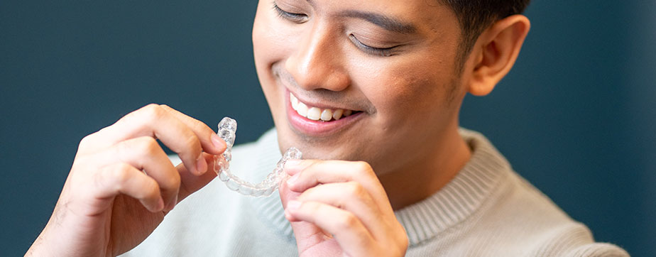
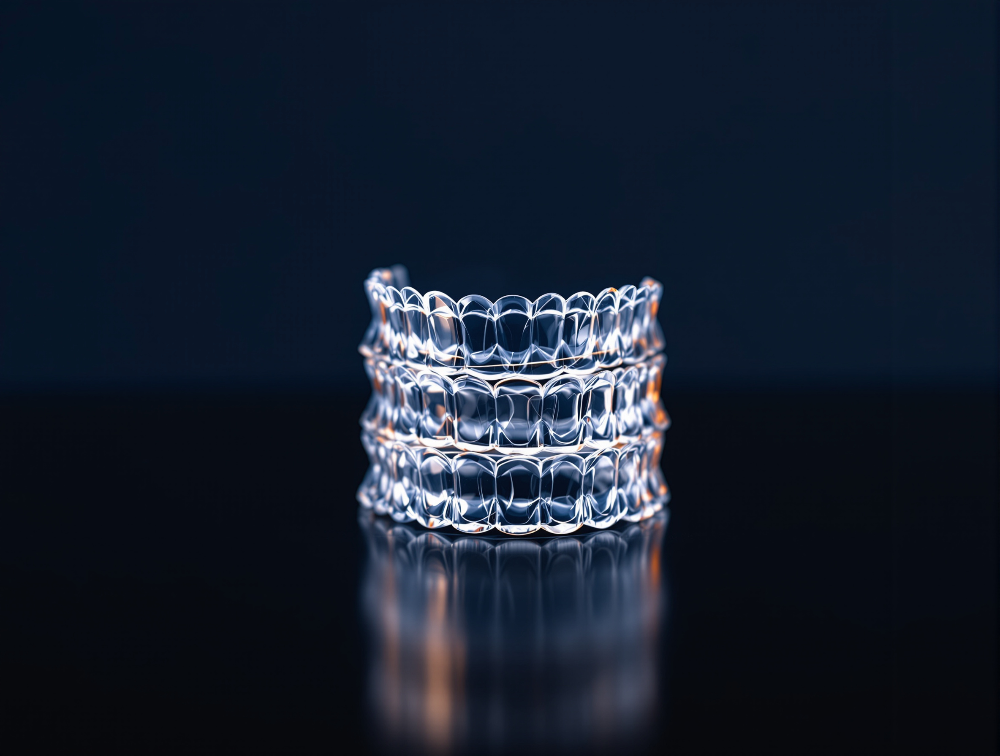
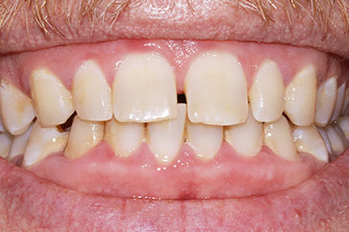
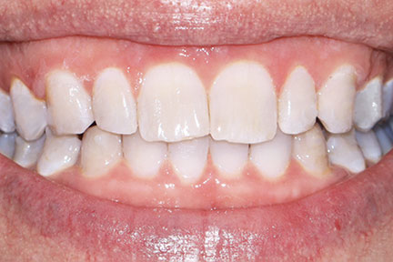
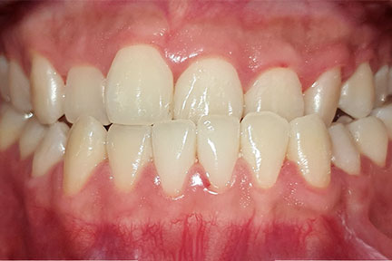
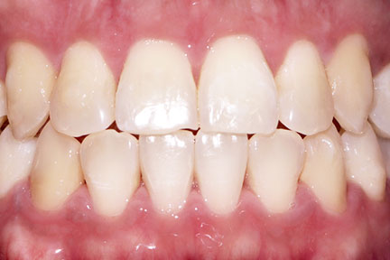

The scanner
An iTero intraoral scanner records the shape of your teeth digitally in minutes.

Invisalign, clear aligners
Free consultation and digital scan. Confirm current consultation terms with the clinic before you book.
Most people who ask about Invisalign are adults.
You have lived with crowded or gapped teeth for years and have decided to deal with it. What you have not decided is to spend the next two years in fixed metal braces, in client meetings, in photographs, and in front of a room of colleagues who will notice on the first morning and mention it for a month.
Aligners are removable. You take them out to eat and to clean your teeth, then put them back. They are clear and close-fitting, which makes them discreet at conversational distance. They are not invisible, and nobody should tell you they are. Someone sitting across a table from you may see them. Most people, in most rooms, will not.
If you are asking on behalf of a teenager, the same assessment applies. The deciding factor is the discipline to keep them in as prescribed, not age.
Your teeth are moved in stages, and each stage is planned before the first tray is made.
Worn 20 to 22 hours a day.
That is the whole method. Aligners only move teeth while they are in your mouth, so wear time is the one variable that is entirely yours.

Cases clear aligners commonly treat.
Invisalign suits mild to moderate cases.
Severe skeletal discrepancies, large rotations, substantial bite correction, and cases requiring extraction with significant movement are usually handled better by fixed braces, sometimes alongside oral surgery.
At the assessment
If your case is one of those, our orthodontist will say so at the assessment. Being told that braces are the correct treatment is not a downgrade and it is not a lost sale. It is the difference between a plan that finishes and a plan that stalls at month fourteen.
Both treatments are offered here, by the same orthodontic team, so the recommendation you get is not shaped by what we happen to provide.
Putty impressions are not part of this.

The scanner
An iTero intraoral scanner records the shape of your teeth digitally in minutes.
The record
The record is exact, it can be re-sent and re-examined without you sitting down again, and it is the input the whole plan is built from.
The sequence
From that scan your orthodontist builds the sequence: which teeth move, in what order, by how much, and how many aligners it takes to get there. The projected movement is shown to you before anything is manufactured, so you can see the intended endpoint and the steps between here and there while you are still deciding.
The refinements
That projection is a plan built on planned movement. Teeth are biological and they do not all track identically, which is why progress is reviewed and the plan adjusted as you go. Refinements exist for exactly this reason and they are a normal part of treatment, not a sign that something went wrong.
Orthodontics is one of our specialist disciplines. Your Invisalign plan is written and monitored by an orthodontist, and the same person follows your case from the scan to the retainer.
That matters more than it sounds.
An aligner series is a prediction, and predictions need someone qualified to notice early when teeth are not tracking to plan and to change the sequence before a year has been spent on it.
Where your case also needs work outside orthodontics, the specialist in that discipline is in the same practice. A periodontist treats the gum and bone first if that is what your case requires. A prosthodontist handles restorative work after alignment, where a crown or veneer is part of the intended result.
Align Technology provider designations reset annually and the current year designation is unconfirmed.
Most cases run 12 to 24 months. A minor correction can finish sooner. A complex one takes longer, and your orthodontist will give you a range for your own case at the assessment rather than a number from a page.
Your own range is given at the assessment.
Appointments are for review rather than adjustment.
Changed at home on the schedule you are given.
What that means for your week
You are not in the chair every month. Aligners are changed at home on the schedule you are given, so the appointments are for review rather than adjustment. Reviews are typically every 3 to 6 months, which is the practical difference between this and fixed braces for someone who travels or works to a full calendar.
Retainers follow treatment. Teeth move throughout life, and a retainer worn as instructed is how the result you paid for is held. Treatment does not end when the last aligner comes out; it ends when you have a retainer routine you can actually keep.
Anchored to published market ranges, not to an Elevate price list.
Real price. The ₱180,000 is a market figure anchored to published Philippine ranges, not an Elevate price. Elevate Dental has not set a figure of its own for a course of aligners, so yours is written down only after the scan and the orthodontist's assessment.
What moves the fee
What you get in writing
Your quote is written after assessment and scanning, not estimated over the phone, so the figure you are given is the figure your plan produces.
Whether refinement rounds and the first set of retainers sit inside the quoted fee, or are quoted separately, is not stated here. An unclear inclusion list is the single most common source of a disputed dental bill.
Your own figure is produced by your own plan, so the only way to get it is a scan and an assessment.
Elevate Dental does not accept HMO or dental insurance. All treatment is self-pay. HMO coverage cannot be used for dental treatments at our clinics.
That is stated plainly here because finding it out late, halfway through a treatment plan, is worse than reading it now.
You pay the clinic directly. Accepted methods are cash, bank cheque, bank transfer, debit and credit cards, and QR payment.
Cases are shown as pairs, photographed under the same conditions and lighting, and segmented by what was actually treated: crowding, spacing, overbite, and relapse after earlier orthodontic work.
Segmenting them matters. A gallery sorted by treatment type lets you find the case that resembles yours instead of scrolling past results that were never your situation.
Nothing in a gallery is a prediction for your case. Two people with similar photographs can need different plans and different timescales.
Segments

BeforeCase 01

AfterCase 01

BeforeCase 02

AfterCase 02

BeforeCase 03

AfterCase 03

BeforeCase 04

AfterCase 04
Both are offered here. This is the comparison as our orthodontists actually make it.
Fixed braces suit you if
your case involves severe crowding, significant rotation, substantial bite correction or extractions. They work continuously because they cannot be taken out, which removes compliance from the equation. Adjustments happen in the clinic. They are visible, and they impose real dietary limits.
Clear aligners suit you if
your case is mild to moderate, and if being discreet through work and photographs matters to you. You remove them to eat, so nothing is off the menu. Cleaning your teeth is unchanged. In exchange, the result depends on you keeping them in for the prescribed hours, every day, and on not losing them.
The deciding question is not which treatment you prefer.
It is what your teeth need and whether your routine can carry the wear time. If your case sits between the two, our orthodontist will tell you which one is planned and why, and what changes if you choose the other.
Read more on the braces page, or bring the question to a consultation and have it answered against your own scan.

Four clinics across Metro Manila.
Mitsukoshi BGC
2F Mitsukoshi BGC, 8th Ave cor 36th St, Grand Central Park, Taguig.
Shangri-La Plaza
4F East Wing, EDSA cor Shaw Blvd, Ortigas, Mandaluyong.
Bonifacio Stopover BGC
Unit R303, 3rd Floor, Bonifacio Stopover Pavilion, BGC, Taguig.
Alabang Town Center
2nd Floor, 2225 Commerce Mall, Alabang Town Center, Ayala Alabang, Muntinlupa 1780.
Imaging
3D CBCT imaging is available at all four clinics, so where your case needs imaging beyond a surface scan, it is taken in the same building as your consultation.
Which clinics deliver Invisalign, and which hold an iTero scanner on site, is not stated here, so check with the clinic you plan to visit before you book.
20 to 22. That is not a target, it is the requirement the plan is calculated on. Under it, teeth move slower than projected and treatment takes longer.
No. Take them out to eat, then clean your teeth before putting them back. Plain water is the only thing you should drink while wearing them; anything with sugar, colour or heat comes out first.
A slight lisp in the first few days is common while your tongue adjusts. It usually settles within a week, and most people stop noticing it before anyone else does.
From ₱180,000, an indicative market figure rather than a quoted Elevate fee. Your own figure is put in writing once you have been examined and scanned, because the number of aligners your plan needs is what sets it.
Typically 12 to 24 months, with review appointments every 3 to 6 months. Your range is given at the assessment.
Additional aligners at the end of treatment to finish detail that has not tracked exactly to the projection. They are common and they are part of normal treatment, not a failure of it. Whether they sit inside your quoted fee is confirmed in your written quote.
Yes. Teeth continue to move throughout life. A retainer worn as instructed is what holds the position you spent 12 to 24 months achieving.
Do not skip ahead to the next set. Go back to the previous set, which still fits, and contact your clinic. Your orthodontist decides whether to replace the lost tray or move you forward early, based on how far through that stage you were.
If aligners are not the right treatment for your teeth, you will be told that at the consultation, and you will be told what is.

Outcome